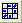

Matrix von Streudiagrammen
Scatter-Matrix-Plot
Eine Matrix von Streudiagrammen ist ein paarweise verbundenes Streudiagramm mehrerer Variablen, die in einem Matrixformat dargestellt werden. Sie kann verwendet werden, um zu bestimmen, ob die Variablen korrelieren und ob diese Korrelation positiv oder negativ ist.
Matrix von Streudiagrammen erstellen
Um eine Matrix von Streudiagrammen zu erstellen:
- Markieren Sie mindestens zwei Arbeitsblattspalten (oder einen Bereich von mindestens zwei Spalten).
- Wählen Sie Zeichnen: 2D: Matrix von Streudiagrammen im Origin-Menü oder klicken Sie auf die Schaltfläche Matrix von Streudiagrammen  auf der Symbolleiste 2D-Grafiken.
- Der Dialog Plotting: plot_matrix wird aufgerufen. Passen Sie die Optionen in diesem Dialog benutzerdefiniert an und klicken Sie auf OK, um eine Matrix von Streudiagrammen zu erstellen.
Jede markierte Spalte (bzw. jeder ausgewählte Bereich einer Spalte) wird als Streudiagrammlayer gegen jede andere markierte Spalte (bzw. jeden anderen ausgewählten Bereich) gezeichnet. Alle Layer werden in einem Matrixformat in einem Diagramm dargestellt.
Einstellungen im Dialog
Sie können den Dialog verwenden, um das Erstellen der Matrix von Streudiagrammen zu steuern.
Eingabe
| Eingabe |
Legen Sie den Eingabedatenbereich fest. Markieren Sie mindestens zwei Y-Spalten aus (oder einen Bereich von mindestens zwei Y-Spalten). |
| Gruppierungsbereich |
Legen Sie den Gruppierungsbereich fest. Die Punkte werden nach der Ebene im Gruppierungsbereich gefärbt.
|
Matrixprofil
| Matrixanzeige |
Das Matrixformat kann eines von vier Anordnungen sein.
| Quadrat 
|
Obere Dreiecksmatrix 
|
Untere Dreiecksmatrix
|
Gemischt Wenn Sie diese Option auswählen, ist Zusätzliche Statistikinformationen in verfügbar. Die Matrixanzeige wird von der Position dieser zusätzlichen Statistikinformationen gesteuert.
|
|
| Zusätzliche Statistikinformationen in |
Wenn Sie Gemischt für Matrixanzeige gewählt haben, ist die Option verfügbar. Legen Sie die Position der zusätzlichen Statistikinformationen fest.
- Die zusätzlichen Statistikinfos werden im unteren Dreieck gezeigt. Die Punktdiagramme werden im oberen Dreieck gezeigt.
- Die zusätzlichen Statistikinfos werden im oberen Dreieck gezeigt. Die Punktdiagramme werden im unteren Dreieck gezeigt.
|
| In diagonalen Zellen zeigen |
- Es wird kein Boxdiagramm oder Histogramm in den diagonalen Zellen angezeigt.
- Boxdiagramme werden in den diagonalen Zellen angezeigt.
- Histogramme werden in den diagonalen Zellen angezeigt.
- Histogramm mit Verteilungskurve
- Histogramme mit Verteilungskurve werden in den diagonalen Zellen angezeigt.
- Die Verteilungskurve wird in den diagonalen Zellen angezeigt.
- Verteilungskurve mit Füllung
- Die Verteilungskurve mit Füllung wird bis unten in den diagonalen Zellen angezeigt.
|
| Variablen in diagonalen Zellen |
Legen Sie fest, ob der Langname der Spalten aus den Quelldaten angezeigt werden soll.
|
| Hilfsstriche und Beschriftungen anzeigen |
Hilfsstriche und Beschriftungen können nach einer der folgenden Optionen angeordnet sein.
| Kein
|
Alle 
|
Abwechseln 
|
|
| Unten&Links 
|
Unten&Rechts
|
Oben&Links
|
Oben&Rechts
|
|
| Abstand (in % der Seitengröße) |
Legen Sie fest, ob ein Abstand zwischen den einzelnen Layer angezeigt werden soll. Geben Sie einen Wert in dem Feld ein, um den Abstand zwischen den Layern in Einheiten von % der Breite zu steuern.
|
Optionen
| Konfidenzellipse |
Wenn dieses Kontrollkästchen aktiviert ist, wird für jedes Diagramm eine Konfidenzellipse basierend auf dem gewählten Konfidenzniveau gezeichnet.
|
| Konfidenzniveau in % |
Diese Option ist nur verfügbar, wenn Konfidenzellipse aktiviert ist. Verwenden Sie sie, um das Konfidenzniveau in Prozent für die Konfidenzellipsen festzulegen. Der Wert muss größer als 0 und kleiner als 100 sein. |
| Lineare Anpassung |
Für jedes Variablenpaar wird eine lineare Anpassung durchgeführt.
- Wenn dieses Kontrollkästchen aktiviert ist, werden die angepasste Linie und der korrigierte R^2-Wert zu jedem Punktdiagramm hinzugefügt.
- Seit Origin 2019 werden die Werte von Korr. R-Quadrat und Pearsons r, falls ausgewählt, in einem neuen Blatt mit dem Namen ScatterMatrixStatsN ausgegeben.
|
Zusätzliche Info
| Pearson r |
Es wird eine Textbeschriftung für den Wert von Pearsons r (Korrelationskoeffizient) zu jedem Punktdiagramm hinzugefügt. |
| Benutzerdefinierte Beschriftung von Pearsons r |
Passen Sie die Beschriftung mit der Infos zu Pearsons r an, wenn die Option Pearsons r aktiviert ist. |
| Kor. R-Quadrat |
Es wird eine Textbeschriftung für den Wert des korrigierten R-Quadrats zu jedem Punktdiagramm hinzugefügt, der sich aus der linearen Anpassung ergibt. Per Standard ist die Option ausgewählt, aber abgeblendet. Sie wird erst bearbeitbar, wenn die Option Lineare Anpassung ausgewählt ist (wenn die abgeblendet ist, wird keine Textbeschriftung erzeugt). |
| Benutzerdefinierte Beschriftung des Korr. R-Quadrats |
Passen Sie die Beschriftung der Info zum Korr. R-Quadrats benutzerdefiniert an, wenn die Option Korr. R-Quadrat aktiviert ist. |
| Gleichung benutzerdefiniert anpassen |
Legen Sie fest, ob die Gleichung für die lineare Anpassungslinie angezeigt werden soll. Diese Option ist nur verfügbar, wenn das Kontrollkästchen Linearer Fit im Zweig Optionen aktiviert ist. |
| Benutzerdefinierte Anpassungsgleichung |
Sobald Anpassungsgleichung aktiviert ist, ist diese Option für Sie verfügbar, um die Gleichung benutzerdefiniert anzupassen.
Der Standardwert der benutzerdefinierten Anpassungsgleichung lautet y=$(a, *)+$(b, *)*x, a und b ist die Matrix im Ergebnisblatt ScatterMatrixStats. Die Gleichung befindet sich in der linken oberen Ecke der Matrix von Streudiagrammen.
|
| Signifikante Markierung |
Legen Sie fest, ob die signifikante Markierung für zusätzliche Statistikinformationen gezeigt werden soll. |
| Signifikanzniveau |
Die Standardwerte sind 0,05 0,01 0,001. Dies bedeutet, es gibt 3 Niveaus. Wenn der Korrelationskoeffizient < 0,001, dann ist die signifikante Markierung ***, wenn 0,001 < Korrelationskoeffizient < 0,01, dann ist die signifikante Markierung ** und so weiter. Wenn der Wert > 0,05, ist die Markierung blank. |
| Beschriftungsgröße nach Wert |
Diese Option ist verfügbar, wenn- der Gruppierungsbereich für den Eingabedatensatz nicht festgelegt ist.
- Von den Optionen Pearsons r und Korr. R-Quadrat eine ausgewählt ist, aber nicht beide.
In solchen Fällen variiert die Größe der Beschriftung gemäß dem Wert.
|
Fehlende Werte listenweise ausschließen
Legen Sie fest, ob fehlende Werte ausgeschlossen werden (listenweise). Das heißt, die ganze Zeile für den gesamten Datensatz wird ausgeschlossen, wenn es fehlende Werte in dieser Zeile gibt.
Diagrammvorlagen
| Punktdiagramm |
Legen Sie die Vorlage für die Ausgabe des Punktdiagramms fest. |
| Boxdiagramm |
Legen Sie die Vorlage für die Ausgabe des Boxdiagramms fest. Diese Option wird deaktiviert, wenn Kein unter In diagonalen Zellen zeigen im Zweig Matrixprofil gewählt ist. |
| Histogramm |
Legen Sie die Vorlage für die Ausgabe des Histogramms fest. Diese Option wird deaktiviert, wenn Kein unter In diagonalen Zellen zeigen im Zweig Matrixprofil gewählt ist. |
| Verteilungskurve |
Legen Sie die Vorlage für die Ausgabe der Verteilungskurve fest. Diese Option wird deaktiviert, wenn Kein unter In diagonalen Zellen zeigen im Zweig Matrixprofil gewählt ist. |
Ergebnisse ausgeben
Diese Option bestimmt, wo die berechneten Daten für die Ellipse und die Anpassung gespeichert werden. Der Standardspeicherort ist ein neues Arbeitsblatt (<neu>) innerhalb der Quellarbeitsmappe ( [<Eingabe>] ).
Statistik der Matrix von Streudiagrammen
Dies bestimmt, wo die Statistikdaten für Pearsons r, Korr. R-Quadrat und Anpassunsgleichung gespeichert werden. Der Standardspeicherort ist ein neues Arbeitsblatt (<neu>) innerhalb der Quellarbeitsmappe ( [<Eingabe>] ).
|
Beachten Sie, dass die Auswahl von N Datensätzen oder -bereichen zu N^2-N Diagrammen und zu einer noch größeren Anzahl von Datensätzen führt. Das Auswählen einer großen Zahl von Datensätzen oder -bereichen kann die Berechnungsdauer dramatisch erhöhen und kann deutlich kleinere Grafiken hervorrufen.
|
 | Seit Origin 2023b wird, wenn der Gruppierungsbereich festgelegt ist, das Ergebnis (einschließlich Konfidenzellipse, Lineare Anpassung, Statistikinfo) für jede einzelne Gruppe ausgegeben. In den diagonalen Zellen folgt die Farbe der Zeichnungen auch der Gruppenfarbe der Punktdiagramme. |